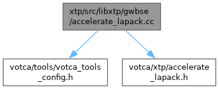

- Generated by
 1.16.1
1.16.1
|
votca 2026-dev
|

Go to the source code of this file.
Namespaces | |
| namespace | votca |
| Provides a means for comparing floating point numbers. | |
| namespace | votca::xtp |
| Charge transport classes. | |
| namespace | votca::xtp::accelerate |
| LAPACK routines of Apple Accelerate, called directly. | |
Functions | |
| bool | votca::xtp::accelerate::LapackAvailable () |
| Whether the routines below can run here (Accelerate build, macOS 13.3+). | |
| int | votca::xtp::accelerate::dsyevd (char jobz, char uplo, long n, double *a, long lda, double *w) |
| int | votca::xtp::accelerate::dpotrf (char uplo, long n, double *a, long lda) |
| Cholesky factorisation of a symmetric positive definite matrix. | |
| int | votca::xtp::accelerate::dpotri (char uplo, long n, double *a, long lda) |
| Inverse from the Cholesky factor of dpotrf (one triangle). | |